Inkspace
Приложение, которое собирает тату-комьюнити в одном месте
У тату-индустрии нет своего дома: портфолио мастера живёт в одной соцсети, переписка — в мессенджере, запись — в заметках. Клиенту сложно найти «своего» мастера и страшно ошибиться, мастеру — дорого и муторно добывать клиентов.
Придумать и спроектировать мобильный сервис, который закрывает весь путь — вдохновился → нашёл мастера → обсудил эскиз → записался → оплатил — и упаковать его в характерную айдентику.
Начал с двух портретов: клиент, которому нужен проверенный мастер по адекватной цене, и мастер, которая ищет клиентов и профессиональное комьюнити. Спроектировал онбординг с выбором роли и любимых стилей — от реализма до неотрайбла; ленту работ; генерацию эскиза нейросетью с примеркой на себе; чат, где обсуждение заканчивается оплатой в один тап; карту мастеров с фильтрами. Айдентика выросла из капли чернил: знак — капля с иглой, чёрный «цвет чернил» и мягкий синий #5E69FF, Onder для плакатов, Inter для набора.
Полный концепт продукта: 15+ экранов приложения, десктопный лендинг «Почему выбирают Inkspace», сити-форматы наружки и мерч — от брелоков до худи. Всю коммуникацию держит слоган «Тату — проще, чем кажется».
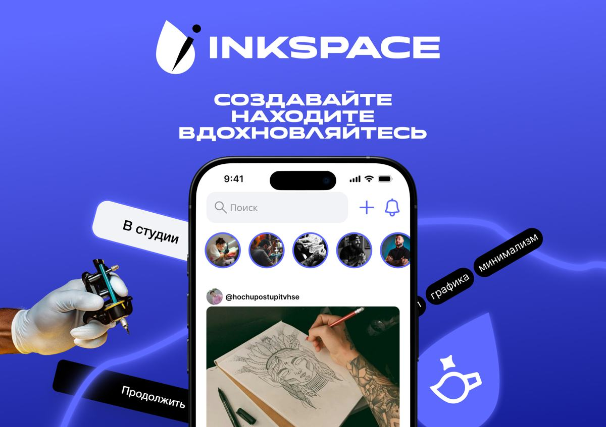
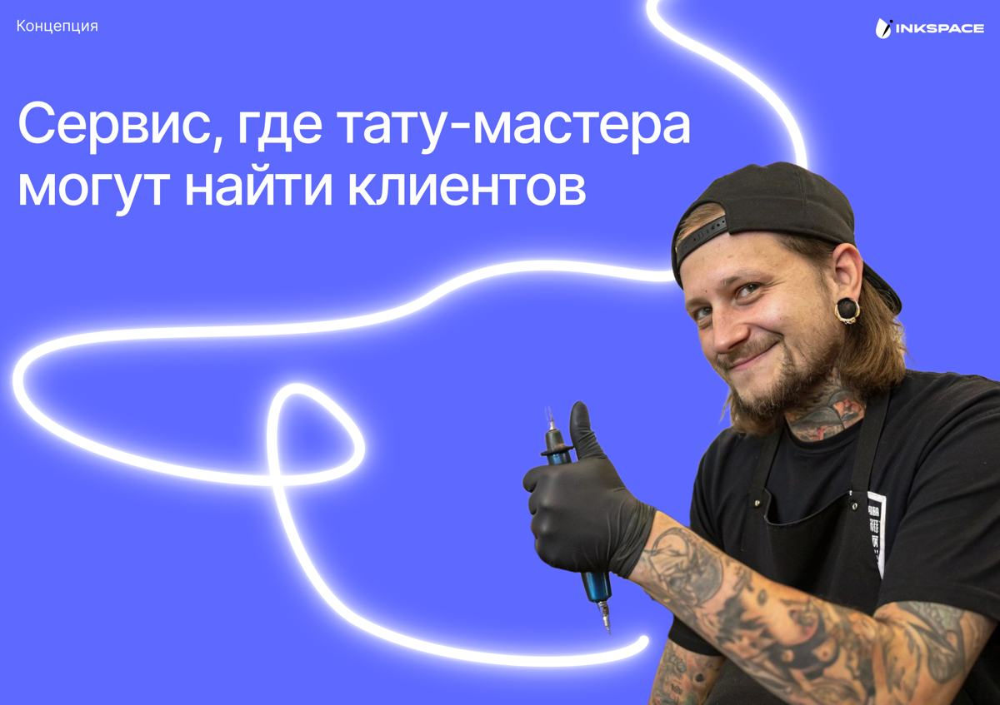
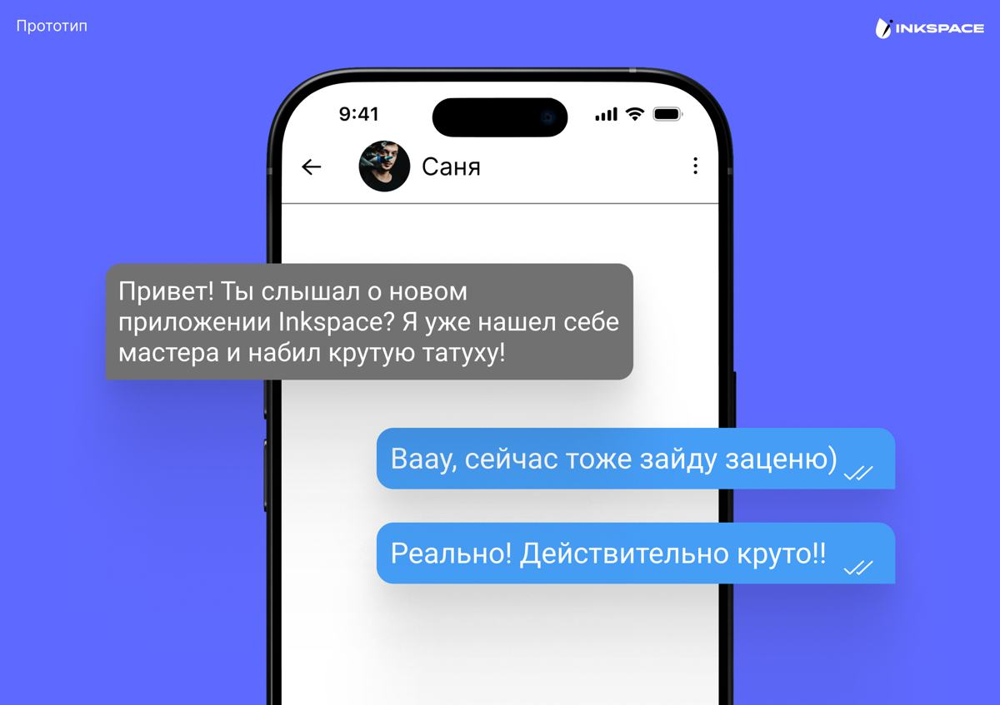
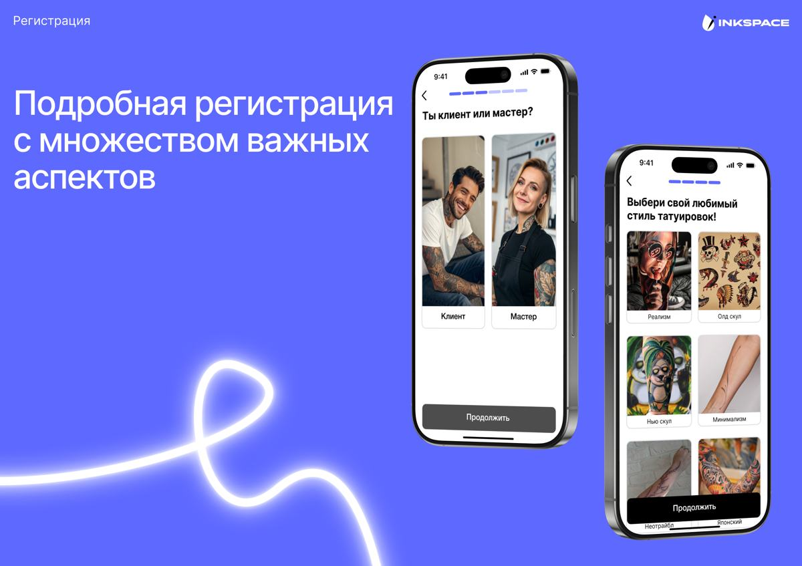
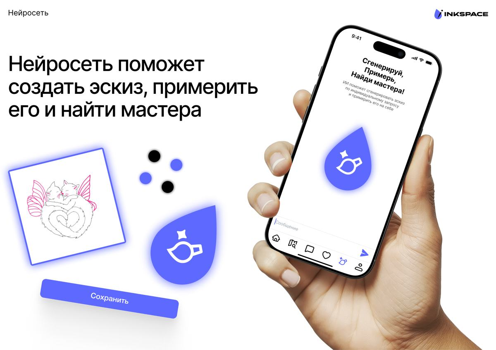
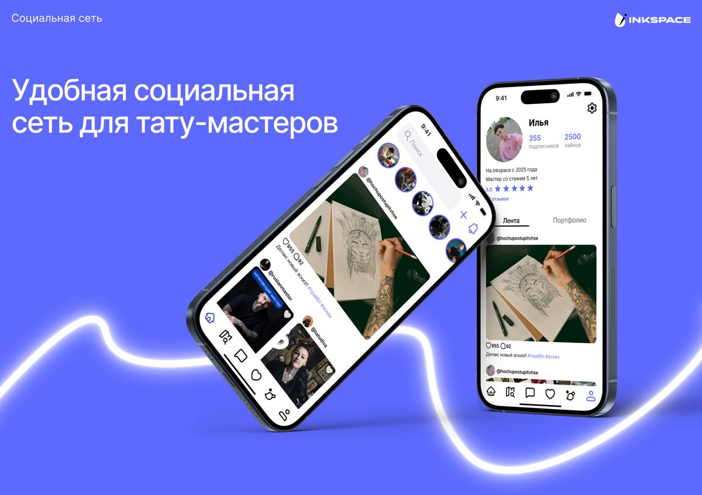
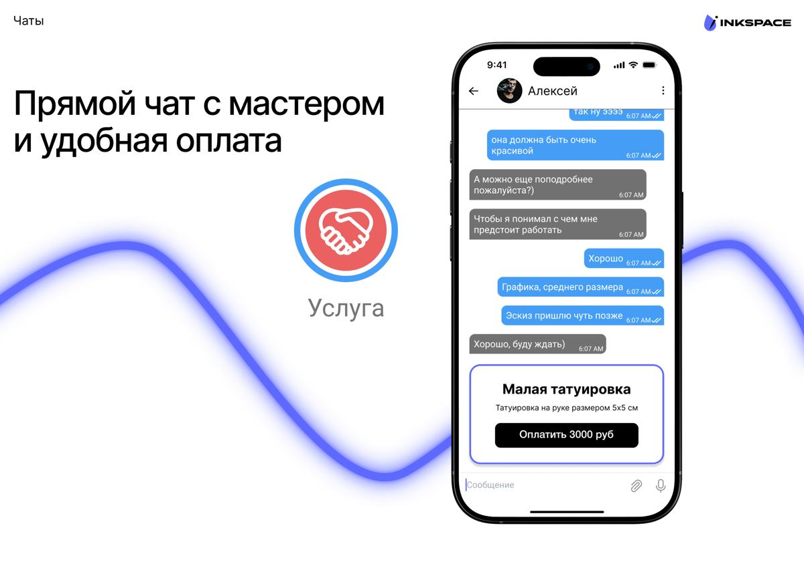
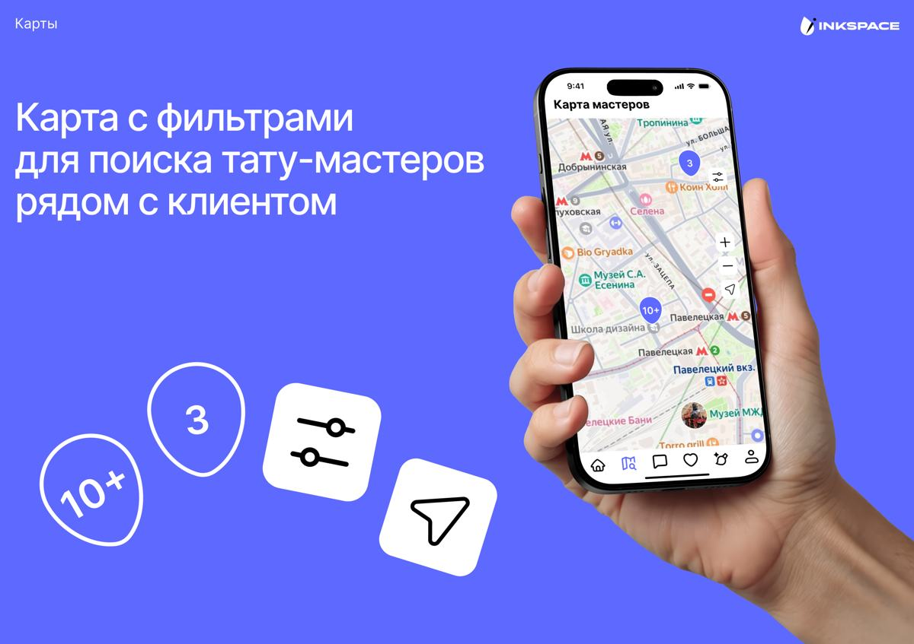
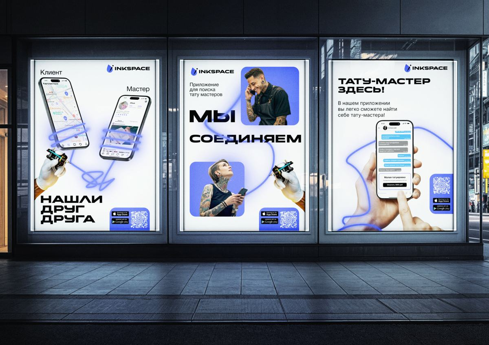
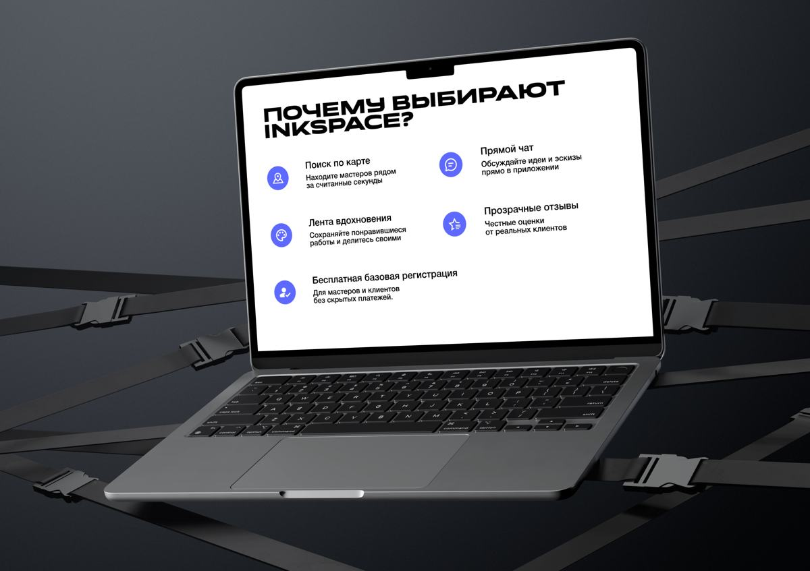
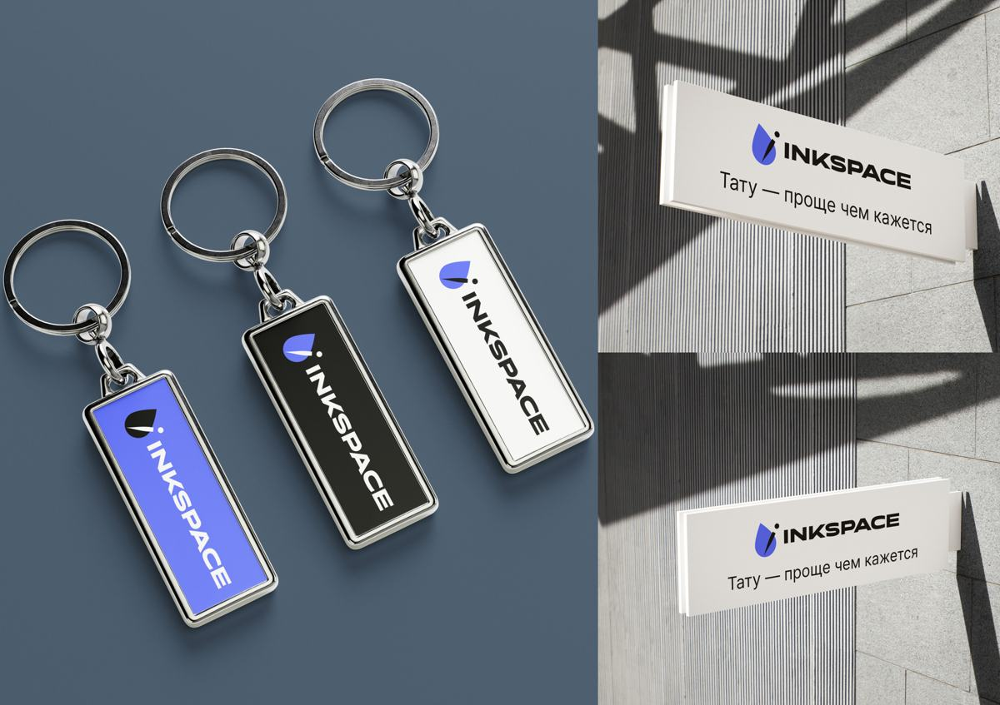
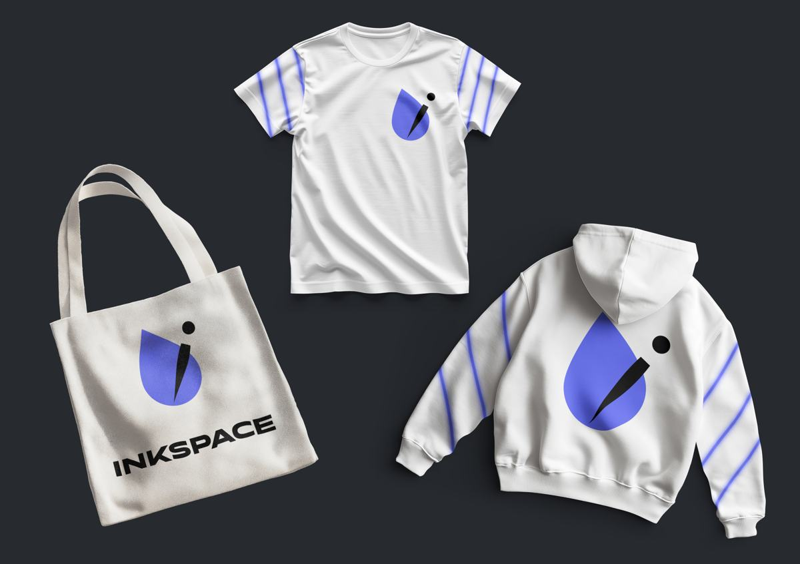
Хочешь такой же результат? Го обсудим →
Следующий кейс: СПАРК — айдентика →